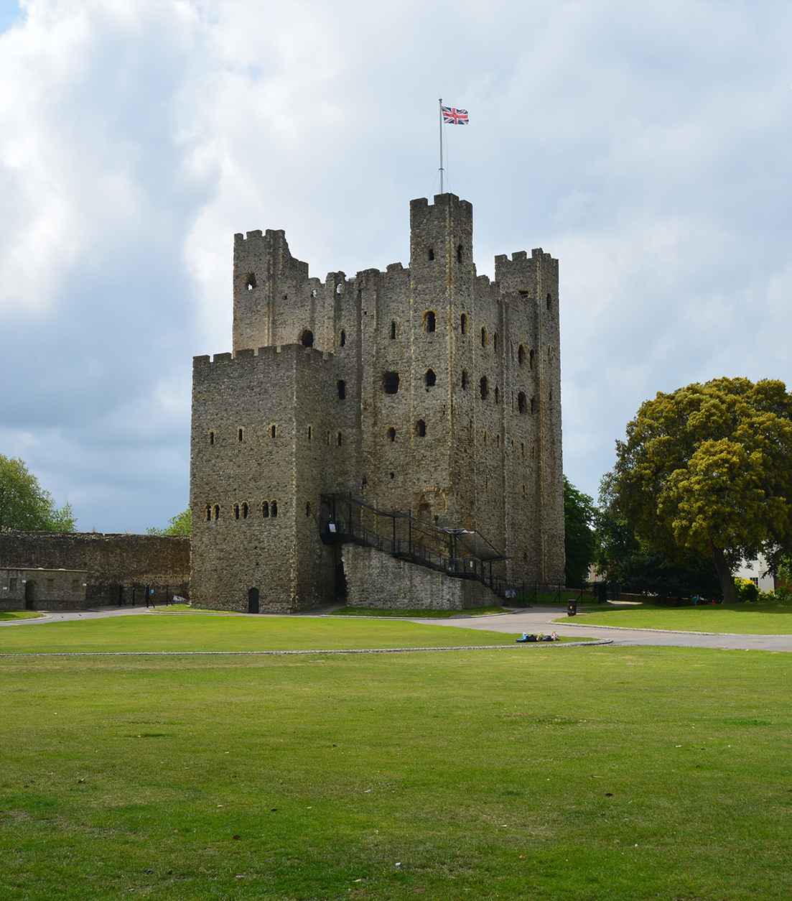
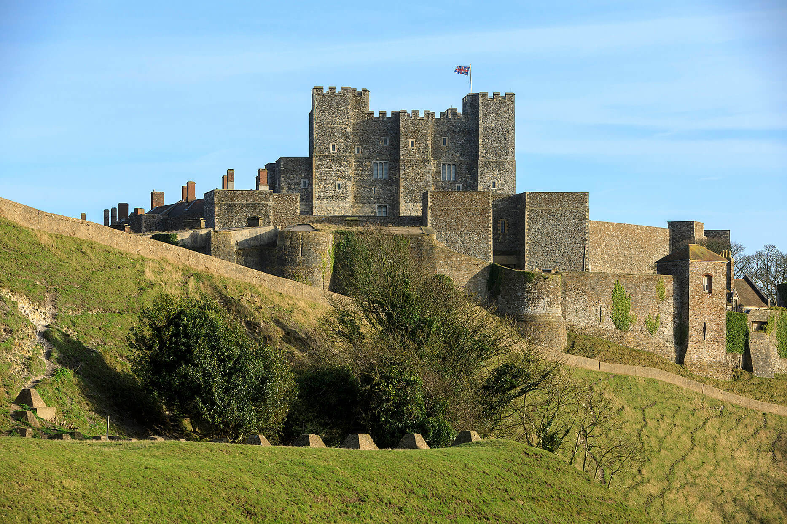
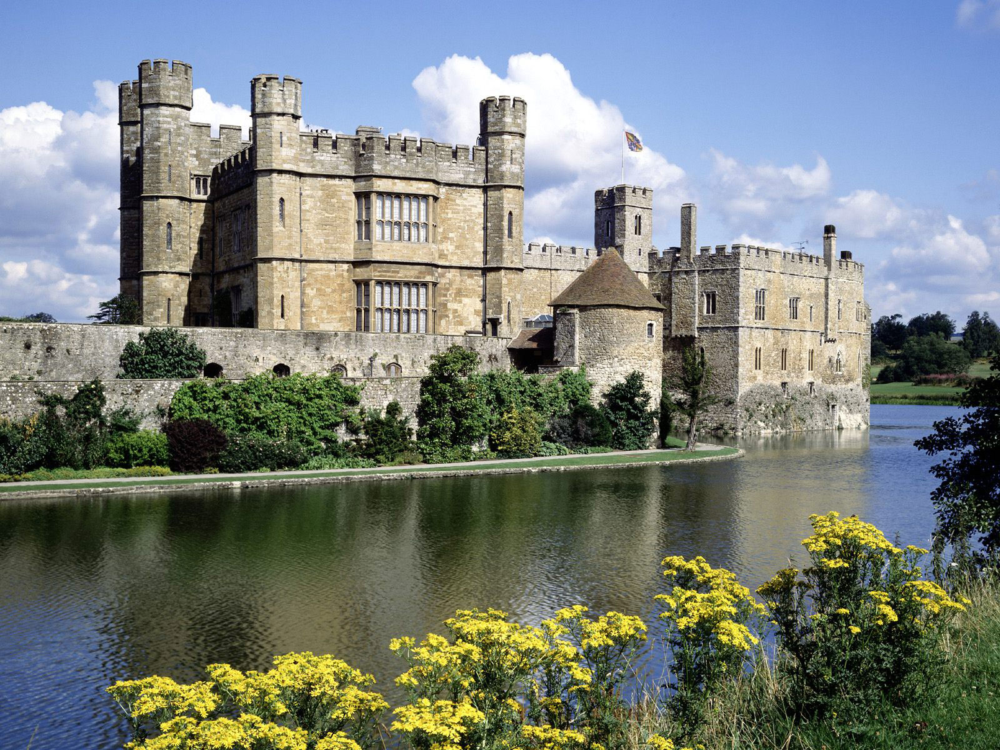

- 
-
Rochester Castle
William of Corbeil, Archbishop of Canterbury, with the support of Henry I, constructed the Norman tower-keep of Kentish ragstone in the year 1127. It still stands 113 feet tall and consists of three levels above a basement. Before entering the keep at first floor level, one must pass through a towering, projecting forebuilding with its own system of defences.
The stronghold, held by insurgent barons, withstood a protracted King John assault in 1215. John set a mine under the keep, sending its southern corner tumbling down after first destroying the outside wall with the fat of 40 pigs. Even though, the defenders persisted for two months before finally giving up due to starvation.
The castle was rebuilt under the reigns of Henry III and Edward I, and it served as a stronghold until the sixteenth century.
- 
-
Dover Castle
Discover the magnificent Dover Castle, England's oldest stronghold with the most amazing tales to tell.
Explore the Secret Wartime Tunnels hidden deep within the White Cliffs of Dover to experience the drama of the Dunkirk evacuation and the ambiance of a WWII hospital. This crucial period in history is brought to life with cutting-edge spectacular effects, compelling stories, and authentic film material. At our replica WWI Port War Signalling Station, learn about the crucial part the castle played in both world wars.
Enter the Great Tower to experience the splendour of Henry II's mediaeval residence. Explore colourfully furnished, realistically replicated chambers as you envision the realm of courtly intrigue and royal ambition. For unmatched views across the English Channel, be sure to ascend to the rooftop.
Additionally, there are over 80 acres of castle grounds to explore. At England's largest stronghold, you may stretch your legs and your imagination as you stroll among the battlements and formidable defences.
- 
-
Leeds Castle
The phrase "loveliest castle in the world" has been used to describe Leeds Castle in Kent, England. This Domesday-listed castle has served as a Norman fortress, a royal house, and a royal palace. The location, on two islands in a lovely lake, is breathtaking.
A Saxon royal family controlled the Royal Manor when it was first constructed in 857 AD. The first stone fortress was being constructed there after the Norman Conquest.
The Castle was transformed into a royal residence for Edward I and his wife Eleanor of Castile in 1278. The castle underwent significant renovations during the reign of Edward I. Due to its three distinct components, each of which has its own entrance, drawbridge, gateway, and portcullis, the Barbican, which was built at this period, is special. In honour of Queen Eleanor, the mediaeval Keep, which includes the Great Hall, is known as the Gloriette.
The ideal setting for your day out is Leeds Castle, which is situated on 500 acres of gorgeous countryside. Visitors may look forward to the mediaeval castle, magnificent grounds, activities, and event schedule.